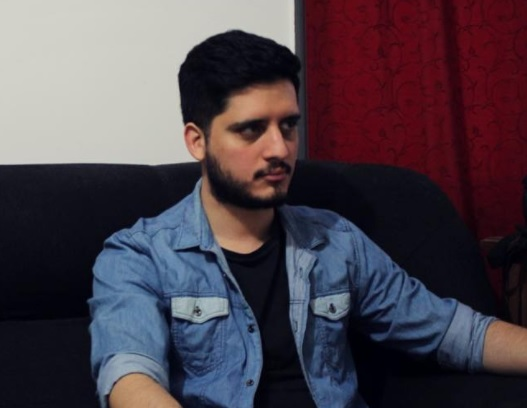

CV de Leandro Matias Zaidán
FullStack Web Developer
Sin experiencia laboral
Educacion
- Lic. en Ciencias de la computación
- 2021-2022. Facultad de Matemática, Astronomía, Física y Computación. Universidad Nacional de Córdoba.
- Curso de Inglés Conversación
- Comcal Sabattini-Agencia Córdoba Joven. 2018.

Experiencia Profesional
- Lic. en Ciencias de la computación
- 2021-2022. Facultad de Matemática, Astronomía, Física y Computación. Universidad Nacional de Córdoba.
- Curso de Inglés Conversación
- Comcal Sabattini-Agencia Córdoba Joven. 2018.
Informacion Adicional
- Conocimientos Basicos en Haskell.
- Conocimientos Basicos en C.
- Curso de desarrolo Web. html, css, JavaScript